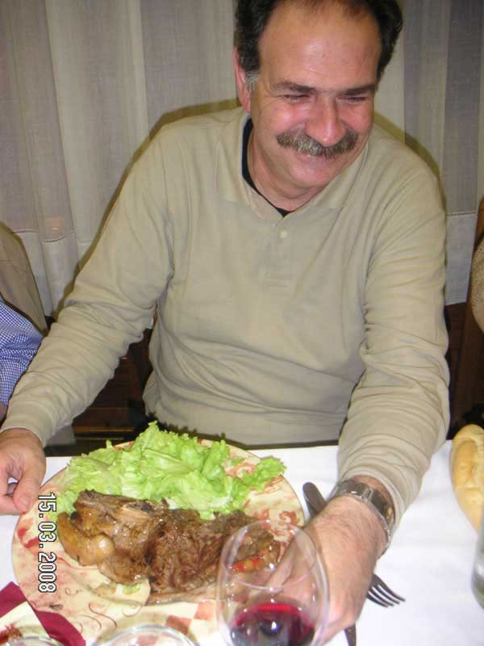

Encuentro en SantoñaAnterior | Inicio | Siguiente |
|
 Fíjense como les cambia la cara a todos en cuanto les ponen cualquier cosilla delante... Pues muy malo no tenía que estar cuando no dejó ni el hueso. Bueno, ese se lo llevó a la residencia, decía que, para limpiarse los dientes... y yo que me lo creo, se lo llevó para comérselo sin que le viéramos. |